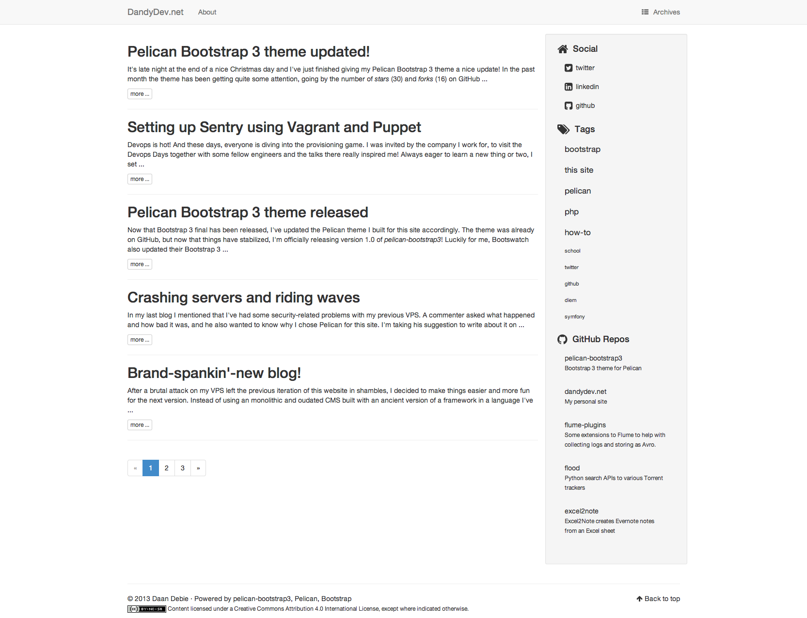
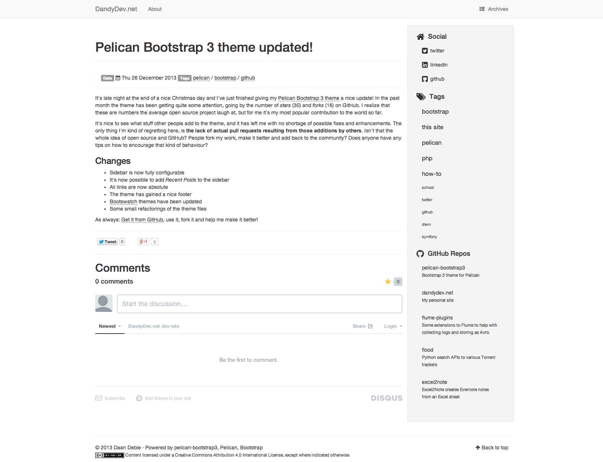

This is a Bootstrap 3 theme for Pelican. It's fully responsive. Bootstrap 3 has seen an official, final release now, so I don't expect any breaking changes anymore. I will try to keep it up-to-date.
If you want to adjust this theme to your own liking, I encourage you to fork it. This theme has started to gather more and more attention in the form of stars and forks. If you make improvements that are useful to others and can make the theme better in general please don't hesitate to make a pull request. For contributing guidelines, look here
First:
git clone https://github.com/DandyDev/pelican-bootstrap3.git
Then:
Point the THEME variable in your pelicanconf.py to /path/to/pelican-bootstrap3
This theme honors the following standard Pelican settings:
<head> section:
FEED_ALL_ATOMFEED_ALL_RSSDISPLAY_PAGES_ON_MENUDISPLAY_CATEGORIES_ON_MENUMENUITEMSLINKS (Blogroll will be put in the sidebar instead of the head)GOOGLE_ANALYTICS (classic tracking code)GOOGLE_ANALYTICS_UNIVERSAL and GOOGLE_ANALYTICS_UNIVERSAL_PROPERTY (Universal tracking code)DISQUS_SITENAMEPIWIK_URL, PIWIK_SSL_URL and PIWIK_SITE_IDIt uses the tag_cloud variable for displaying tags in the sidebar. You can control the amount of tags shown with: TAG_CLOUD_MAX_ITEMS
Part of the versatility of this theme comes from the fact that I included all the lovely Bootstrap 3 themes from Bootswatch, built by Thomas Park. You can tell Pelican what Bootswatch theme to use, by setting BOOTSTRAP_THEME to the desired theme, in lowercase (ie. 'readable' or 'cosmo' etc.). My own site is using Readable. If you want to use any other Bootstrap 3 compatible theme, just put the minified CSS in the static/css directory and rename it using the following naming scheme: bootstrap.{theme-name}.min.css. Then update the BOOTSTRAP_THEME variable with the theme-name used.
Set SHOW_ARTICLE_AUTHOR to True to show the author of the article at the top of the article and in the index of articles. Set SHOW_ARTICLE_CATEGORY to show the Category of each article.
If you want to add custom css to the theme, without having to clone and maintain your own version of the theme, you can use the CUSTOM_CSS variable. The value is the location where you tell Pelican to put the file (see below):
CUSTOM_CSS = 'static/custom.css'
To tell Pelican to copy the relevant file to the desired destination, add the path to STATIC_PATHS and the destination to EXTRA_PATH_METADATA, like so:
```
STATIC_PATHS = ['images', 'extra/custom.css']
EXTRAPATHMETADATA = { 'extra/custom.css': {'path': 'static/custom.css'} } ```
You can choose the syntax highlighting style by using the PYGMENTS_STYLE variable to specify one of the built-in Pygments styles. By default the native style is used. The following styles are avaiable:
For a demo of the different Pygment styles, have a look here
Pelican-Bootstrap3 follows the standard Pagination settings of Pelican and uses the Bootstrap3 Pagination component, but you can optionally use the Boostrap3 Pager by setting USE_PAGER to True.
You can provide a logo for your site using SITELOGO. For example: SITELOGO = 'images/my_site_logo.png'. You can then define the size of the logo using SITELOGO_SIZE. The width of the <img> element will be set accordingly.
By default the SITENAME will be shown as well. It's also possible to hide the site name using the HIDE_SITENAME flag.
It's possible to show breadcrumbs in your site using the DISPLAY_BREADCRUMBS flag. By default the article category isn't shown in the breadcrumbs, if you wish to enable it, set the DISPLAY_CATEGORY_IN_BREADCRUMBS flag to True.
If you wish to use the inverse navbar from Bootstrap, set the flag BOOTSTRAP_NAVBAR_INVERSE to True.
This theme has support for the Related Posts plugin. All you have to do, is enable the plugin, and the theme will do the rest.
This theme supports including IPython notebooks through the Liquid Tags plugin. If you enable the plugin, the theme will automatically include the right CSS/JS to make the notebooks work.
Set the FAVICON option in your pelicanconf.py. For example: FAVICON = 'images/favicon.png'
DISPLAY_ARTICLE_INFO_ON_INDEX is set to True, article info (date, tags) will be show under the title for each article, otherwise only title and summary will be shown (default). By default, the title of a page is used both for showing the title as
part of a page's content, and, if pages in menu is enabled, as the
label of the corresponding menu item. You can choose a different label
for the menu (such as a short single word) than the page title by adding a
Menulabel metadata attribute to the page header (Menulabel: in
markdown, :Menulabel: in rst).
You can show a short blurb of text about yourself and a picture. The following two settings are used for this:
ABOUT_ME variable is set to (raw html is allowed)AVATAR variable to the relevant picture (e.g. 'images/profile.png')The following things can be displayed on the sidebar:
SOCIAL variable. If it's empty, the section will not be shown
pelicanconf.py provide your social links like this:
SOCIAL = (('twitter', 'http://twitter.com/DaanDebie'),
('linkedin', 'http://www.linkedin.com/in/danieldebie'),
('github', 'http://github.com/DandyDev'),)
* Tags will be shown if DISPLAY_TAGS_ON_SIDEBAR is set to True. Normally, tags are shown as a list.
* Set DISPLAY_TAGS_INLINE to True, to display the tags inline (ie. as tagcloud)
* Categories will be shown if DISPLAY_CATEGORIES_ON_SIDEBAR is set to True
* Recent Posts will be shown if DISPLAY_RECENT_POSTS_ON_SIDEBAR is set to True
* Use RECENT_POST_COUNT to control the amount of recent posts. Defaults to 5
To remove the sidebar entirely, set HIDE_SIDEBAR to True.
If you're using reStructuredText for writing articles and pages, you can include the extra CSS styles that are used by the docutils-generated HTML by setting DOCUTIL_CSS to True. This can be done as a global setting or setting it in the metadata of a specific article or page.
comments to you pages' metadata. Set it to enabled to enable comments for that page. Comment-threads for pages will have an id that is prefixed by 'page-'.You can optionally declare a Creative Commons license for the content of your site. It will appear in the site's footer. To enable, use one of the following two ways for configuration.
CC_LICENSE to the common abbreviated name of the license: "CC-BY" (require attribution), "CC-BY-SA" (require ShareAlike), "CC-BY-ND" (NoDerivatives) , "CC-BY-NC" (require attribution, no commercial reuse), "CC-BY-NC-SA" (require ShareAlike, no commercial reuse), or "CC-BY-NC-ND" (NoDerivatives, no commercial reuse).CC_LICENSE_DERIVATIVES - "yes" if permitted, "no" if not permitted, and "ShareAlike" if derivatives must be shared under the same terms.CC_LICENSE_COMMERCIAL - "yes" if commercial reuse is permitted, and "no" otherwise. CC_ATTR_MARKUP to True.The license choice mirrors the Creative Commons License Chooser. Source for the macro that renders the mark is at http://github.com/hlapp/cc-tools.
The theme can show your most recently active GitHub repos in the sidebar. To enable, provide a GITHUB_USER. Appearance and behaviour can be controlled using the following variables:
GITHUB_REPO_COUNTGITHUB_SKIP_FORKGITHUB_SHOW_USER_LINKIn order to make the Facebook like button and other social sharing options work better, the template contains Open Graph metatags like <meta property="og:type" content="article"/>. You can disable them by setting USE_OPEN_GRAPH to False. You can use OPEN_GRAPH_FB_APP_ID to provide a Facebook app id.
You can also provide a default image that will be passed as an Open Graph tag by setting OPEN_GRAPH_IMAGE to a relative file path, which will be prefixed by your site's base url. Optionally, you can override this default image on a per article and per page basis, by setting the og_image variable in an article or page.
The theme supports Summary Twitter Cards. To activate the necessary tags set TWITTER_CARDS to True. Because Twitter Cards also use Open Graph tags to identify some of the necessary metadata, USE_OPEN_GRAPH must also be set to True (which is the default).
You can optionally provide a TWITTER_USERNAME which will be used to set the Twitter username for the site and for the content creator.
The same image options for Open Graph (see above) can be used for setting images that appear on Twitter Cards. So if you have set an OPEN_GRAPH_IMAGE and optionally og_image for articles and/or pages, you're good to go for Twitter Cards as well.
The theme can show your twitter timeline in the sidebar. To enable, provide a TWITTER_USERNAME and a TWITTER_WIDGET_ID.
To get a TWITTER_WIDGET_ID, go to: https://twitter.com/settings/widgets and select Create new. You'll find the TWITTERWIDGETID under the html or in the site url:
https://twitter.com/settings/widgets/TWITTER_WIDGET_ID/edit
You can enable sharing buttons through AddThis by setting ADDTHIS_PROFILE to your AddThis profile-id. This will display a Tweet, Facebook Like and Google +1 button under each post.
http://domain.com/page.html#UF0983. This function can be disabled by setting ADDTHIS_DATA_TRACK_ADDRESSBAR to False.ADDTHIS_FACEBOOK_LIKE, ADDTHIS_TWEET, ADDTHIS_GOOGLE_PLUSONE.The footer will display a copyright message using the AUTHOR variable and the year of the latest post. If a content license mark is enabled (see above), that will be shown as well.
If you want more examples of what you could do with this theme, have a look here.

